|
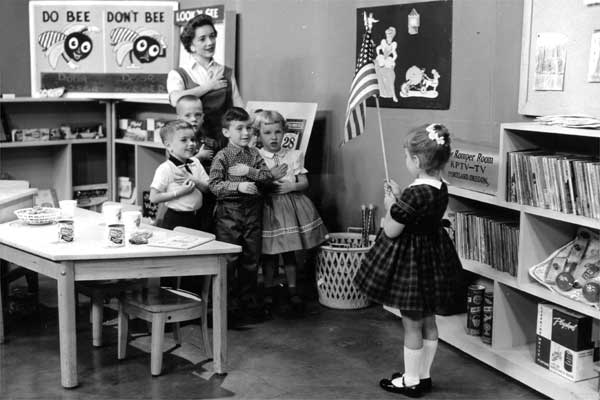 |
|
The
very
first
Romper
Room
show
on
KPTV,
Monday
September
28,
1959.
"Miss
Dorothy"
leads
the
children
in
reciting
the
pledge
of
allegiance.
Children:
Bobby
Fornoff,
Richard
Giehr,
Keith
Schwartzkopf,
Cynthia
Neer,
Sherri
Lilleoren
(holding
flag).
[Photo
courtesy
of
"Miss
Dorothy"
Bryant.] |
|
KPTV's
Romper
Room
was
a
local
"franchised"
version
of
the
original
show,
created
by
Bert
and
Nancy
Claster
for
station
WBAL
in
Baltimore,
Maryland.
That
program
began
in
1953.
Although
there
was
interest
by
CBS
in
broadcasting
the
show
nationally,
the
Clasters
chose
to
"syndicate"
the
program.
Local
stations
had
the
option
of
airing
the
Baltimore
version,
hosted
by
"Miss
Nancy"
Claster,
or
creating
their
own
version
with
a
local
host
and
local
children.
Romper
Room
first
aired
in
Portland
on
KGW
(8)
on
May
26,
1958,
with
Miss
Patty
as
teacher.
It
was
the
58th
market
to
carry
the
show.
That
version
ran
for
an
hour,
and
featured
six
children
in
the
classroom.
Less
than
one
year
later,
in
April
1959,
KGW
took
the
NBC
network
affiliation
away
from
KPTV.
Suddenly,
with
hours
of
additional
daytime
programming,
including
The
Today
Show,
Channel
8
found
itself
without
an
early
morning
time-slot
for
Romper
Room.
The
show
moved
to
11:30am,
and
was
cut
to
a
half
hour,
but
it
was
obvious
that
KGW
didn't
have
an
appropriate
place
to
air
the
show.
|
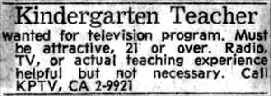 |
|
A
newspaper
ad
starts
the
search
for
Romper
Room's
new
teacher.
[Ad
courtesy
of
"Miss
Dorothy"
Bryant.] |
|
KPTV
had
the
opposite
problem.
With
the
loss
of
NBC
and
the
switch
to
ABC,
Channel
12
had
several
morning
time-slots
to
fill.
Uncle
Charlie's
Roundhouse
and
cartoons
were
brought
in
to
fill
the
void,
but
more
shows
were
needed.
So,
in
early
1959,
KPTV
acquired
the
rights
to
Romper
Room
beginning
in
September..
When
Miss
Patty
declined
to
continue
her
role
at
the
new
station,
the
search
began
for
another
teacher
to
host
the
show.
Months
of
interviews
and
dozens
of
applicants
later,
the
job
went
to
a
22-year-old
performer
named
Dorothy
Wymore.
Dorothy
had
a
substantial
amount
of
radio
and
television
experience
on
her
résumé. A
singer
since
the
age
of
three,
she
had
appeared
on
"Uncle
Nate"
Cohn's
Stars
of
Tomorrow
on
KGW
radio.
She
was
familiar
to
TV
viewers
as
hostess
for
Merry
Go
Round
for
18
months,
as
well
as
numerous
local
appearances
on
The
Red
Dunning
Show
and
The
Ron
Myron
Show.
|
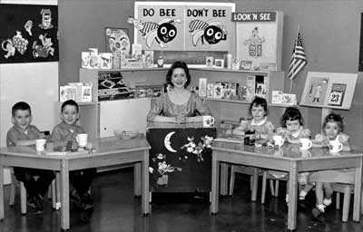 |
|
December
23,
1959.
The
classroom
is
a
full
house
with
Johnny
and
Jimmy
Arens
and
Sherry,
Terry
and
Cindy
Fitzgerald.
[Photo
courtesy
of
"Miss
Dorothy"
Bryant.] |
|
KGW's
Romper
Room
ended
on
Friday,
September
25,
1959.
On
the
following
Monday,
the
show
moved
to
KPTV
and
"Miss
Dorothy"
took
over
the
reins.
The
program
returned
to
an
early
morning
slot,
9:00am
and
kept
its
half-hour
format.
This
version,
however,
featured
only
five
students,
who
would
stay
for
two
weeks.
To
keep
the
makeup
of
the
class
continually
changing,
every
week
two
or
three
of
the
students
would
be
replaced,
so
each
week,
a
"new"
class
would
be
introduced.
Unlike
most
local
shows,
the
format
of
Romper
Room
was
extremely
rigid.
Dorothy
Wymore
flew
to
Baltimore
to
take
classes
and
learn
the
structure
of
the
program
from
creators
Bert
and
Nancy
Claster.
This
was
necessary
to
keep
the
content
and
direction
of
the
show
consistent
from
market
to
market.
She
returned
to
Portland
with
a
booklet
that
outlined
everything
from
dress,
hair
and
makeup
to
how
to
move
and
talk.
In
addition,
she
was
given
strict
direction
on
the
daily
content
of
each
show.
Of
the
millions
of
children
who
watched
Romper
Room
during
its
30-plus
year
run,
all
of
them
saw
essentially
the
same
show,
with
only
the
teacher
and
students
as
the
variables.
That's
not
to
say
there
wasn't
room
for
individuality.
While
the
booklet
outlined
the
content
of
each
segment,
it
was
up
to
each
teacher
to
"fill-in"
the
rest.
It
was
here
that
"Miss
Dorothy"
stepped
outside
of
lines
and
made
the
show
her
own.
Her
lovely
singing
voice
and
gentle
manner
created
an
instant
rapport
with
her
"students,"
and
the
thousands
of
children
who
tuned
in
each
day.
COMING
SOON:
MORE
ABOUT
MISS
DOROTHY
AND
MORE
EXCLUSIVE
PHOTOS!
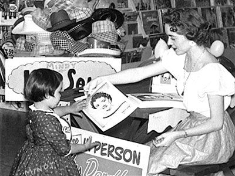
Romper Room's "Miss Dorothy," greets a young fan at a personal
appearance.
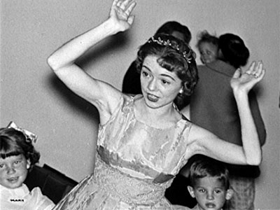
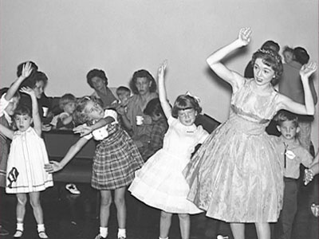
9/12/60-9/16/60: Shannon DIckson, Maureen Doig, Keith Nelson,
Melinda Parker, Jeffrey Wickham. (TVG)
10-24/60-10/28/60: Jeffrey W. Davis, Pamela K. Hampton, Karen Ann Houd, Susan
Lutz. (TVG)
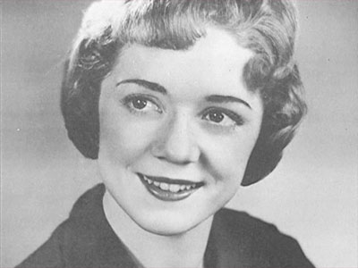
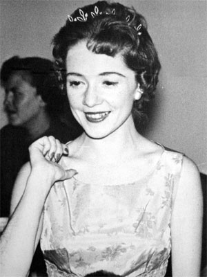
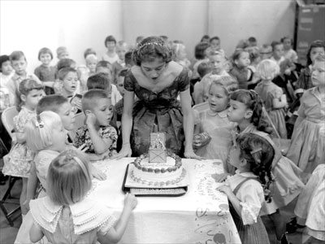
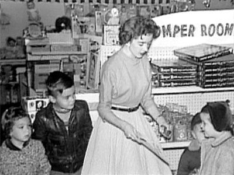
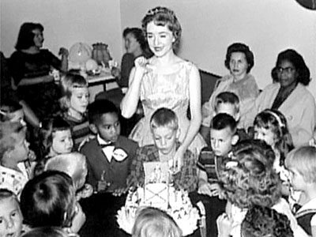
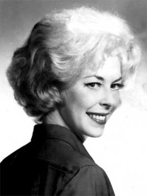
Miss Robin took over the teaching duties in
April of 1962.
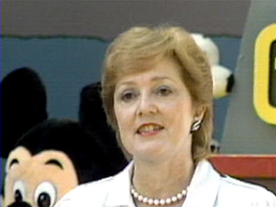
Miss Dorothy, on Ramblin' Rod's 25th
Anniversary Special,
1989.